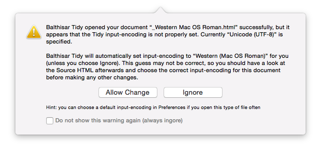

Use the File Encoding Helper
When Balthisar Tidy opens a document, it tries to use the Tidy option
input-encoding in Preferences. The typical
modern practice is to use UTF-8 encoding for all files, however there are many
legacy file encoding formats from different countries and different
operating systems. Balthisar Tidy supports every encoding offered by
Mac OS X.
There is no tried and true way to determine the encoding format for most formats. For the most part, Balthisar Tidy will assume that you, the user, know what you are doing.
In same cases, though, it’s obvious that the input-encoding
is wrong. In these few cases, and when the correct preference is
selected, Tidy will offer you the chance to change the encoding format,
as shown below.

Tidy’s criterion for success is whether opening the document yields any
text at all. As indicated in the warning, it’s still possible that the
input-encoding is incorrect. You should examine the Source
HTML (not the Tidy HTML!) to verify that the correct
input-encoding is selected. If some non-Western characters
still look incorrect, you can manually choose the correct
input-encoding from the Tidy Options pane. If
you use this input-encoding, you can also set it as the default in
Balthisar Tidy’s Preferences.